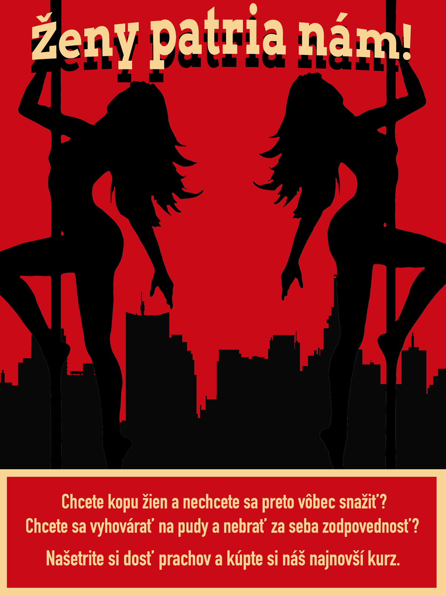
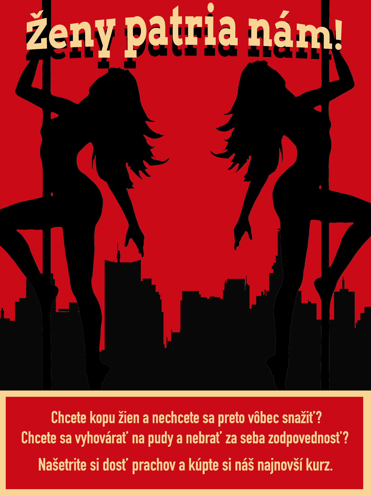

ČERVENÝ TEROR
Kreppius | Článok
Ajajáj. Už ste si mysleli, že budem písať o komunistoch. Ja si asi ale počkám na Marínu. Ja som verný. Na rozdiel od podporovateľov červenej pilulky.
Ale čo je to tá červená pilulka? Prečo to má taký sprostý názov? Je to ideológia založená na filme Matrix, kde v jednej zo slávnejších scén ponúka Morfeus nášmu hrdinovi červenú a modrú pilulku. Modrá pilulka reprezentuje ignoranciu: keď si ju vyberiete, zabudnete na tvrdú pravdu a môžete ďalej žiť svoj život bez nejakých starostí. Keď si zoberiete červenú pilulku, zostanete v realite, kde je len pravda: tvrdá a bolestivá, ale aj taká je pravda.
Na základe tohto filmu sa rozbehla internetom určitá ideológia, ktorá hlási, že vie mužom povedať pravdu o ženách a zároveň ich naučiť, ako vyhrať v systéme. Mojim čitateľom by sa už mali rozbehnúť v hlave majáky, lebo takéto veci sľubujú väčšinou len ľudia, čo sa snažia niečo predať. Ale vtip to teda nie je. Rád by som len odmietol celý červený teror a len povedal, že je to ďalší internetový vtip. Ale v našej spoločnosti sa táto pliaga šíri neskutočnou rýchlosťou a treba ju zastaviť predtým, ako sa dostaneme do terminálneho štádia. A o tom všetkom sa dnes budeme baviť.
Tak o čom, dokelu, je tá červená pilulka? Vysvetlím. Muži, ktorí túto ideológiu vyznávajú, sa často odvolávajú na to, že spoločnosť je postavená na ženskom „princípe“ (neviem nájsť lepší výraz). Jednoducho, že spoločnosť ovládajú ženy, a tým pádom sa tak aj formuje. To znamená, že muž ako taký, sa v spoločnosti plnej žien nemôže správať ako muž (čo u týchto ľudí znamená spávať s každou ženou). Tým sú utláčané jeho prirodzené pudy. Xdéčko. Následne, ale prichádza riešenie, ktoré znie tak, že muž má šancu u ženy len keď sa naučí tipy a triky ako sa pri ženách ukázať. Proste, fake it till you make it. A tu prichádza duch kapitalizmu, lebo každý trik je skrytý, až dokým nenaťukáte do počítača číslo kreditky a tie tri čísielka vzadu. A sme tam, kde sme boli. Drahí moji, objavili sme cestu, ako speňažiť to, že muži sa nevedia so ženami ani baviť, ale chcú s nimi spávať. Fakt výkvet spoločnosti.
To, čo presne máte robiť, závisí už od toho, koho presne počúvate. Niektorí hovoria o obliekaní sa, niektorí hovoria o tom, ako sa správať k žene ako ku handre, niektorí idú do extrémov a hlásajú, že musíte furt ženy ponižovať. Je toho fakt veľa. Tých trikov a tipov je veľa, ale základ je, že muž by naraz mal mať veľa žien a s nimi byť. Namiesto toho, aby sa plnohodnotne venoval jednému vzťahu, tak sa treba ťahať za veľa štetkami. No čo už.
Chodil som určitú dobu na debatný krúžok, tak použijem taktiku „argument za argumentom“. Najprv poviem argument a potom napíšem esej prečo je ten argument na hovno. Platí? Bude to sranda nebojte.
„Spoločnosť je ovládaná ženami a muž je utláčaný“
No fajne. Akými ženami? Je nejaká skupina žien, ktoré to tu celé ovládajú? Ja žijem v rodine, kde väčšina členov sú ženy a každý boží deň je hádka za nejakú hovadinu. Včera to bol obed, deň predtým pes. Akože ak ma naozaj nechcete pobaviť, tak mi nehovorte, že ženy kontrolujú spoločnosť. Nevedeli by sa zhodnúť ani na mieste stretnutia ich organizačnej jednotky.
Ale dosť komédie, lebo asi je to myslené tak, že spoločnosť ako taká je ovládaná ženami. To neznamená, že je určitá skupina žien, ktorá ju ovláda, ale to, že spoločnosť ako taká je riadená princípmi, ktoré vyhovujú ženám. Ono to síce pekne znie, ale reálne, kde je to vidieť? Jeden jediný príklad, ktorý vidím je súdnictvo pri rozvodoch (tam by sa naozaj malo zapracovať na tom, že muži by boli viac braní ako ľudia a nie ako len platiči výživného), ale aj to závisí prípad od prípadu. Nedá sa celoplošne povedať, že ženy za všetko môžu, tak ako sa nedá celoplošne povedať, že muži za všetko môžu. To je to isté, ako keď v Nemecku hádzali všetky svoje problémy na chudákov Židov. A to všetci vieme ako dopadlo...
Čiže ešte raz. Kde presne? Čo to znamená princípy, ktoré vyhovujú ženám? Podľa mňa je len to obranný mechanizmus pre týchto mužov, aby si našli spoločného nepriateľa, ktorého musia poraziť. Hen ženy. Pozrite sa, ako všetko ovládajú. Bu bu bu. A masy sa následne hrnú kúpiť si nový výkal do kníhkupectva. Je to úprimne nápad, ktorý sám o sebe neobstojí pri ľuďoch, ktorí sa na chvíľku zamyslia, ako svet alebo spoločnosť funguje. Myslíte si, vážne, že spoločnosť ako taká funguje vôbec nejako? Je to tak masívny chaos, že vôbec vysloviť takúto myšlienku je troška smiešne. Žiadne ženy nemôžu za to, že ste si nevedeli nikoho nájsť.
Ale poďme na druhú stranu. Je veľmi ľahké v dobe sociálnych sietí obviniť jednu skupinu, že všetko spôsobila. Lebo ženy naozaj niekedy majú až moc veľké očakávania. A sú niekedy aj proste p--e. Ale nemyslím si, že sa to dá celoplošne povedať. Nie každá žena rozmýšľa iba tak, že kto ju najlepšie uspokojí. Mal som tú česť baviť a kamarátiť sa s mnohými inteligentnými ženami, ktoré vedia aj normálne myslieť a nie len na sex. A mal som tú česť byť okolo mužov, ktorým ide len o sex a s kým sa vyspia nabudúce. Aby som to zhrnul, debilov je vždycky dosť a nikdy to nie je len jedna skupina alebo v našom prípade pohlavie. Tak prestaňte robiť zo žien nepriateľov.
A tým pádom, že spoločnosť je ovládaná ženami, ako presne je muž utláčaný? Čím? Tým, že musí dačo robiť, aby sa oň ženy zaujímali? Tým, že treba normálnu babu hľadať a nie len zobrať najopitejšiu obchodná basic z klubu a čakať, že vám zajtra bude variť a vysávať? No to už je fakt teda utrpenie. Ale budíček chlopi. Ak chcete mať normálny vzťah, treba sa troška aj snažiť. Nič vám nepadne do rúk len tak. Že ja toto musím vysvetľovať mojej vekovej kategórií a ešte vyššie je dosť smiešne...
Čiže muži nie sú utláčaní. Muži trpia. To možno. Ale byť utláčaný a trpieť sú dve iné veci.
„Muž ma prirodzený pud spávať hore dole a mal by si ho plniť“
Ježiš tak toto je argument hodný päťročného decka. No fňuk, fňuk. Len to, že máte „prirodzený pud“, neznamená, že sa teraz všetci rad radom poserieme. Prirodzený pud je tiež mať čo najviac vecí, aby ste prežili. Znamená to, že každý má teraz byť milionár? Či čo? Fakt nechápem.
A taktiež, nie sme my ako ľudia troška inteligentnejší ako nejaký pes? Alebo divoký vlk? No tak potom. Však pánbožko nám tú inteligenciu dal, aby sme vedeli naše prirodzené pudy prekonať, no nie? To, že my ako ľudia, sme vyvinutí natoľko, že vieme rozmýšľať nad tým, čo robíme a prečo to robíme. Tieto pudy sú charakteristické pre Hedonistickú spoločnosť (pozri minulé články), a keď váš jediný cieľ v živote je si tieto pudy čo najrýchlejšou cestou napĺňať, tak patríte do zoo a nie na ulicu, kde chodia aj normálni ľudia.
Nie som biológ (a ani jeden s týchto pilulkárov nie je), a tým pádom sa tu nebudem hádať, či to je pravda alebo nepravda. Preto sa poďme porozprávať o oboch prípadoch: v jednom, kde to pravda je a v druhom, kde je výrok „muži od prírody musia mať čo najviac sexu“ nepravdivý.
Ak je výrok nepravdivý, tak celý argument padá. Tým pádom je to nič, niečo vymyslené, čo iba hrá do všeobecnej rétoriky týchto šarlatánov.
A keď je pravdivý aj tak sa predsa vieme kontrolovať. V ktorom období bola spoločnosť v inom bode? Vždy iba za najvyššej krízy sa stalo to, že proste všetci sa navzájom znásilňovali. To naozaj chceme? Len zato, že muž si potrebuje vyprázdniť semeno, tak teraz sa má spoločnosť tomu prispôsobiť? Ak to naozaj proste nevydržíte, tak si to spravte sami. Ja nechápem prečo do toho treba ženu. Ak je pud sexuality len ten, že potrebujete vypustiť von to, čo musíte, tak to sa dá spraviť aj bez pomoci ženy. Na to vám vážne netreba, aby ste trávili svoj čas chodením po kluboch len s týmto cieľom.
„Muž musí preukázať žene, že je jej hodný, a aby to vedel si musí kúpiť môj kurz“
No a tu sa dostávame do veľmi zaujímavého teritória. Muž sa musí preukázať žene, že je jej hodný. A teraz si tú dynamiku otočme. Nerobí žena náhodou to isté? Čo si myslíte, prečo sa ženy starajú o to, aby sa pekne obliekali a dávali si na seba make-up? Len tak pre srandu trávia pred zrkadlom hodiny? Nie, robia to preto aby sa páčili, prípadne odlíšili. To, že muži musia robiť to isté, je teda logické a nie je to niečo nad čím treba polemizovať. Ale čo tie triky a tipy?
Často je počuť od mužov, ktorí túto ideológiu vyznávajú, že treba si rozvíjať svoju „Game“. Xdéčko. Čiže mne niekto hovorí, že mne sa treba učiť ako sa rozprávať so ženami, aby sa s vami vyspali? No podržte mi červené, lebo idú „choré riadky“ práve.
V prvom rade sa treba ku ženám správať ako k ľudským tvorom. To, že v zadnom vrecku máte pomocné kartičky a učíte sa pred zrkadlom ako sa najlepšie pozdraviť, vás nikam nedostane. Ak idete za ženou len s tým, že sa s ňou chcete vyspať, tak je to z vás cítiť viac intenzívnejšie ako arabský parfum vo výťahu a daná dáma, ak má aspoň 5 IQ, sa vám otočí chrbtom. Sex by nikdy nemal byť váš cieľ a ani baba samotná. Ak neviete normálne konverzovať s niekým, tak vám hovno pomôže kurz za 300 dolárov. Nechápem ľudí, ktorí sa silou mocou snažia niekomu dostať do postele. Je to správanie, ktoré nie je hodné muža, je to správanie hodné divého vlka niekde vonku v lese.
Mali ste niekedy že normálnu konverzáciu s babou? Ja hej. A poviem vám dačo: ak nemyslíte vtákom a aj ju chvíľočku počúvate, tak je to celkom normálna komunikácia. Dokonca by sa dalo povedať, že sa bavíte aj s normálnym človekom. Je to priam až neuveriteľné, že?
Pozrite sa na to takto. Treba sa s nejakou babou pobaviť a potom prísť na balenie. Samozrejme, na to treba čas a áno pri randení už meníte tón. A samozrejme, konverzácia sa niekam uberá. Ale stále nemyslíte na sex. Všetci len myslia na to, ako sa najrýchlejšie s niekým vyspať. Muži budú trpieť extrémne nudné ženy a platiť im drahé večere len preto, lebo vedia, že im dá, keď sa vrátia späť na apartmán. A to je nechutné, ale je to ich vec. Všetci len myslia na sex. Je to ako keby to čaro, že si s niekým proste sadnete oproti sebe a len sa nezáväzne bavíte o niečom. O nejakej hovadine. Že proste spravíte si výlet niekam bez toho, aby ste od toho niečo očakávali. Že proste sa ku danej dáme správate ako ku človeku, ktorý má pocity a nie len ako ku niekomu, kto vám neskôr vyfajčí a tam váš vzťah končí. Aj sto takýchto vzťahov by som vymenil za jeden poriadny.
A keď ja vidím, ako títo muži chodia a skúšajú tieto techniky z internetu, je to doslova komédia. Je vidieť, že majú naučených len zopár vecí a viet a akonáhle dievča troška odbočí, už nevedia čo robiť. Už sú stratení. A hopsa ďalší kurz si kúpiť.
„Dlhodobý vzťah by nemal byť váš hlavný cieľ“
Zo všetkých vecí mi práve pri tejto vete prichádza najviac nagrc. Dlhodobý vzťah by práveže mal byť váš cieľ. Vysvetlím prečo.
Pozrite sa na to takto, podľa mňa existujú len dve možnosti: buď sa v živote venujete práci alebo sa venujete vzťahu. Nedá sa oboje naraz, lebo oboje je samostatná robota, vaše životné dielo. Niekto sa môže vyšplhať v robote na vysoké miesta a mať úspech, ale tým pádom zanedbá rodinu - ak vôbec nejakú má. A druhá možnosť je sa venovať dlhodobému vzťahu, aby ste spoločne s partnerom alebo partnerkou vychovali deti, ktoré budú danému svetu pomáhať alebo aspoň budú vaše meno reprezentovať v dobrom svetle. Niet inej možnosti. Všetko ostatné sú ciele nižšieho rangu.
Ale my sa dnes sústredíme na vzťahy. Dlhodobý vzťah by mal byť vaším hlavným cieľom hlavne preto, lebo je to jediná vec, ktorou nebudete márniť čas. Jednorazové sexuálne radovánky sú strata času. Chodenie s babou von, len aby ste sa s ňou vyspali je strata času. Chodenie do klubov, len aby ste niekoho zbalili, je strata času. Mať viac báb naraz je strata času.
Vždy si treba povedať destináciu, že kam to celé smeruje. Kam smerujú vzťahy založené len na báze sexu? Len ku viac sexu. Tam to končí. Presne tam, kde to začalo. Sú to prázdne putá - ak sa to putami dá vôbec nazvať. Nemajú tam podtón nejakých emócií alebo niečoho viac, je to založené len na príťažlivosti, je to založené len na tých pudoch, o ktorých sme hovorili. Keby sme chceli byť surovejší, dalo by sa povedať, že je to určitý obchod: vy sa tej babe venujete a ona sa s vami vyspí. Tam to končí a začína.
Nechcete mať doma osobu, ktorá vás naozaj má rada? Nechcete sa ráno zobudiť vedľa partnerky a cítiť jej jemný dotyk a vedieť, že znamená to viac ako len pohyb rukou? Nechcete mať doma niekoho, kto je vám zároveň priateľkou, milenkou, oporou v dobrom aj v zlom? Nechcete sa raz aj snažiť pre niečo viac, ako len uspokojenie samého seba a svojho ega? Nechcete sa raz v starobe pozrieť na stôl, kde sedí celá vaša rodina, ktorá sa rozpráva a navzájom sa má rada? Nechcete si len tak raz sadnúť s niekým na balkón a len sa pozerať na večernú oblohu a proste len tak ostať? A povedať si, že ste to dokázali, že sa vám darí udržiavať ten vzťah pokope?
Jasné, že to je risk. Jasné, že sa to môže posrať. Ale aj taký je život. Nie je to celé len prechádzka rúžovou záhradou. Ale aspoň zomriete s pocitom, že ste sa o niečo pokúsili a nie len s mobilom, kde máte čísla na sto žien.
Červený teror je pliaga, ktorá ničí mozgy mladým ľudom. Červený teror spôsobuje to, že vzťahy sú brané ako niečo, čo musí byť furt o šťastí a o príjemných pocitoch. Červený teror spôsobuje, že mladí muži míňajú peniaze len na videá a kurzy a učia sa len nenávidieť ženy. Červený teror spôsobuje rozvody, červený teror ničí rodinnú jednotku a detstvá toľkých detí, červený teror je pliaga, ktorú keď nezastavíme, tak nám požerie mozgy celej generácie a ktovie, kde sa to celé skončí. Červený teror je hrozba a musíme zas a znova proti nej bojovať.
Začal som celý článok ako komédiu. Ale čím ďalej píšem, tým viac sa mi ten šibalský úsmev vytráca z tváre. Tým viac ma to trápi, a tým viac sa trápim za tie všetky pekné vzťahy, ktoré mohli byť. Za tých ľudí, ktorí chcú byť šťastní, ale postupne sa o to uberajú, lebo veria debilinám na internete. Tým viac chcem rozbiť huby všetkým magorom, ktorí tieto debiliny pchajú ľudom do hlavy a ešte na tom zarábajú peniaze.
Je to veľmi smutný stav spoločnosti, lebo chápem aj mužov a chápem aj ženy v tomto. A tým pádom nie je žiadna pravda, ktorá by vyhovovala každému. A postupne vidím aj mojich veľmi dobrých priateľov ako upadajú do pazúrov tejto ideológie a osobne si myslím, že to nedopadne dobre.
Aby sme si nenahovárali - nie každý dlhodobý vzťah dopadne dobre. Nie každé manželstvo rozdelí smrť. Ale ja si aj tak myslím, že za pokus to stojí. Možno nezmeníme nič, ale za pokus to stojí. Každý muž, kto toto číta: hľadajte si partnerku, s ktorou chcete prežiť celý život. Nemyslite prirodzenými pudmi, ale myslite skôr hlavou. Nezúfajte, nájde sa vám taká. Pracujte na sebe a príležitosť príde. A hlavne rozmýšľajte, čo tu chcete zanechať: 100 mileniek alebo 1 šťastnú ženu a dobre vychované deti?
 

21. septembra 2020